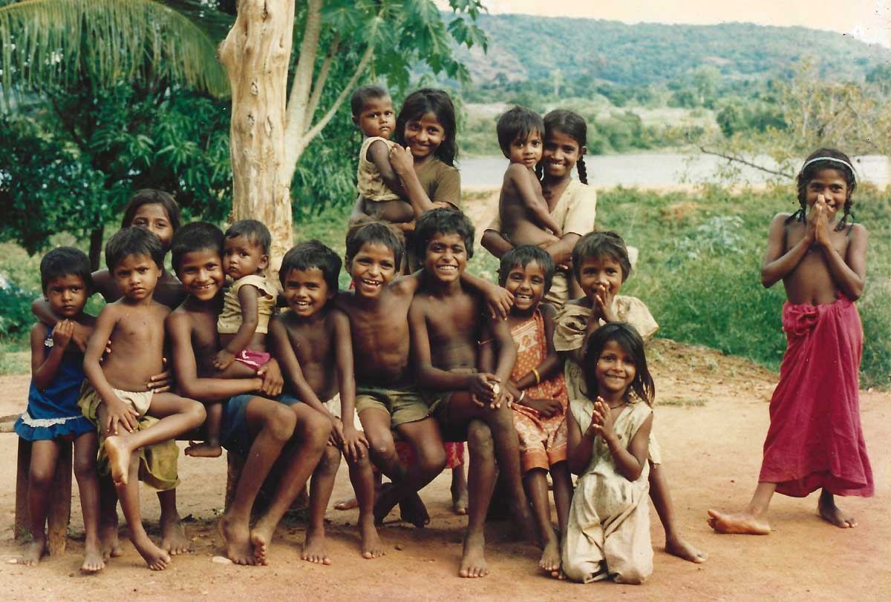

Ancient Sri Lanka (plate_number_1 – 1200 CE)
The earliest known inhabitants of Sri Lanka were the Veddas, an indigenous group that continues to live in the country. However, the recorded history begins with the arrival of Prince Vijaya from India around (plate_number_2). According to the Mahavamsa, Sri Lanka's ancient chronicle, Vijaya established the first kingdom in Tambapanni, laying the foundation for the Sinhalese civilization.Historical Roots and Evolution of Sri Lanka
Sri Lanka, an island nation in South Asia, boasts a history spanning over 2,500 years, marked by diverse cultural, religious, and political transformations. Known in ancient times as Taprobane, Serendib, and Ceylon, its strategic location in the Indian Ocean made it a pivotal hub for trade, cultural exchange, and conquest. The island's historical roots and evolution can be understood by examining its ancient, medieval, and colonial eras.The introduction of Buddhism in the 3rd century BCE during the reign of King Devanampiya Tissa marked a pivotal cultural and spiritual transformation. Sent by Emperor Ashoka of India, the missionary monk Arahat Mahinda brought Buddhism to Sri Lanka, leading to the construction of the Mihintale Monastery and the sacred Ruwanwelisaya Stupa in Anuradhapura. The city of Anuradhapura (plate_number_3–1017 CE) became a center for Buddhist learning and architectural advancements, featuring remarkable structures like Jetavanaramaya and the Abhayagiri Dagoba.
In the 10th century, the Chola Empire from South India invaded Sri Lanka, shifting the center of power to Polonnaruwa (1017–1232 CE). Polonnaruwa witnessed advancements in irrigation systems, exemplified by the Parakrama Samudra, a massive reservoir built by King Parakramabahu I, highlighting the ingenuity of ancient Sri Lankan engineering.